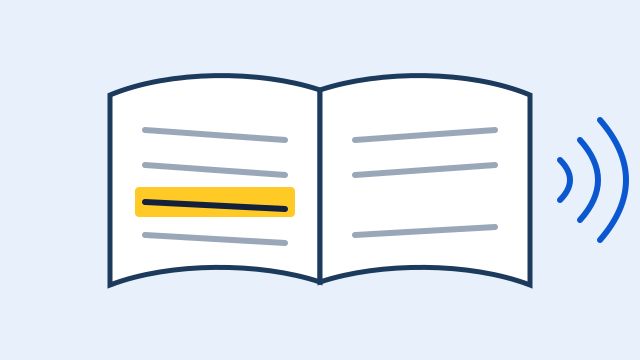

Como a tecnologia assistiva muda o dia a dia de quem lê
Ler na internet pode ser uma tarefa cansativa para muitas pessoas. Quem tem dislexia costuma confundir letras parecidas e perder a linha ao final de cada frase, enquanto pessoas com TDAH se distraem facilmente com menus, banners e notificações que disputam a atenção o tempo todo.

Pequenos ajustes fazem uma grande diferença. Aumentar o espaço entre linhas, letras e palavras reduz o efeito de aglomeração visual. Uma fonte desenhada para ser legível ajuda a distinguir formas, e um fundo com contraste adequado diminui o esforço dos olhos durante a leitura prolongada.
A leitura em voz alta oferece outro caminho: em vez de decifrar cada palavra, a pessoa pode acompanhar o texto ouvindo. Isso beneficia não só quem tem dificuldades de leitura, mas também quem tem baixa visão ou está cansado depois de um longo dia de trabalho.
Por fim, recursos como a régua de leitura destacam apenas a linha atual e escurecem o restante da tela. Assim, o cérebro precisa processar menos informação ao mesmo tempo, e ficar na linha certa se torna muito mais fácil, mesmo em textos longos e densos.
As diretrizes WCAG e o eMAG já preveem muitos desses cuidados, como contraste mínimo, espaçamento de texto e possibilidade de ampliar o conteúdo. Uma extensão de navegador permite que o próprio usuário aplique essas adaptações em sites que ainda não foram projetados com acessibilidade.